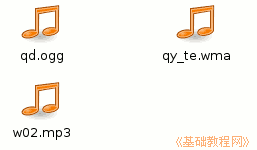
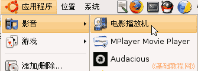
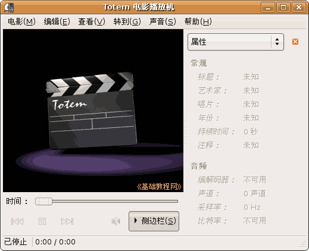
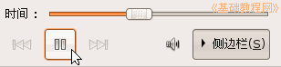
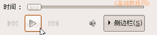

电脑操作基础
作者：TeliuTe 来源：基础教程网
十一、播放音乐 返回目录 下一课电脑不仅能够处理文字、图片，也可以播放音乐和电影视频，下面我们来学习一下如何播放音乐；
1、音乐文件
1）常见的音乐文件有Mp3格式、Ogg格式、Wma格式格式等，一般只能听音乐，没有视频，图标是一个音符；

2）音乐文件需要程序来播放，并且安装相应的解码器，一般我们用“影音”菜单里的电影播放器；
2、使用电影播放机
1）点上面板的菜单“应用程序－影音－电影播放机”，出来一个播放器窗口；

2）打开的窗口，上边是菜单栏，中间是视频窗口，下边是播放进度条，右边是属性面板；

3）播放音乐的方法是，找到音乐文件，双击自动打开这个播放器，并开始播放音乐，
也可以点菜单“电影－打开”命令，然后出来一个对话框，选择一个音乐文件；
4）播放控制，点下边两条竖线按钮，可以暂停播放，这个是暂停按钮；

5）播放停止后，按钮变成一个小三角，这是播放按钮，点击就可以重新播放；

6）右边的一个小喇叭按钮，点击会出来一个音量小面板，拖动滑块可以调节音量大小；
7）点上边的菜单“查看－全屏”命令，还可以全屏观看，播放电影的时候可以使用；
本节学习了播放音乐的基本操作，如果你成功地完成了练习，请继续学习；本教程由86团学校TeliuTe制作|著作权所有，商业用途请与作者联系
基础教程网：http://teliute.org/
美丽的校园……
转载和引用本站内容，请保留版权信息和本站链接。